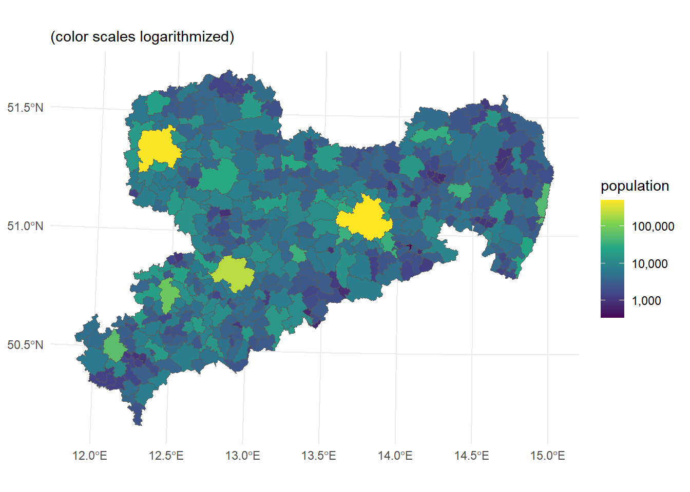
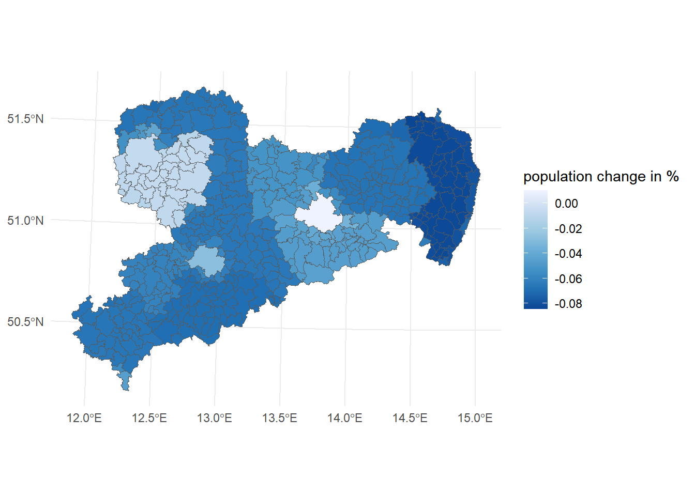

Population dynamics in Saxon municipalities

Data description
This analysis uses population data from the SEDAC Gridded Population of the World (GPW), v4 for the years 2015 and 2020 in the highest resolution (30 arc-second grid cells), which yields rasters that depict about 1 km of actual land space. These raster information are then compiled to Saxon municipality population counts and finally used to calculate the population growth rate over 5 years. In sum, there are 418 observed municipalities.
| Variable | Description |
|---|---|
| pop_growth | log(pop_2020/pop_2015) |
| pop_2015 | log(pop_2015 |
| unemployed | log(number of unemployed in 2015) |
| purchasing_power | log(available income per capita in 2015 in Euro) |
| distance_supermarkets | log(average distance to the next supermarket) |
| distance_pharmacy | log(average distance to the next pharmacy) |
| Mean | SD | Min | Median | Max | Histogram | |
|---|---|---|---|---|---|---|
| pop_growth | -0.06 | 0.02 | -0.08 | -0.07 | 0.01 | ▂▇▃▁▁ ▁ |
| pop_2015_log | 8.41 | 0.93 | 5.85 | 8.33 | 13.14 | ▂▅▇▄▂ |
| unemployed_log | 4.96 | 1.17 | 2.64 | 4.79 | 10.21 | ▂▄▇▅▃▂▁ |
| purchasing_power | 19579.45 | 1187.44 | 16399.00 | 19474.00 | 24585.00 | ▁▄▇▅▂▁▁ |
| distance_supermarkets | 1966.33 | 1333.29 | 299.00 | 1555.00 | 7136.00 | ▇▆▄▃▂▁▁ |
| distance_pharmacy | 2755.89 | 1867.03 | 423.00 | 2046.00 | 10023.00 | ▇▆▃▃▂▁▁ |
| reachability_middle_city | 11.02 | 6.69 | 0.00 | 11.12 | 36.07 | ▄▄▇▆▅▂▁ |
| reachability_metropolitan | 28.31 | 12.98 | 0.00 | 26.01 | 68.93 | ▁▂▇▇▅▄▂▁▁ |
| settlement_space_share | 12.95 | 7.65 | 4.04 | 10.70 | 53.55 | ▇▇▃▁▁▁ |
| recreations_space_share | 1.28 | 1.53 | 0.10 | 0.77 | 17.04 | ▇▁ |
The population information are then joined by municipality-specific information from the INKAR portal of the German Federal Office for Building and Regional Planning (BBR). Following (Alamá-Sabater et al. 2021), the explanatory variables cover economic conditions, accessibility, public facilities, and natural amenities. Economic conditions are measured by the unemployment rate and purchasing power per capita. Accessibility is defined as the distance to the nearest middle or large center, according to the Central Place theory as applied in Germany. Public facilities are measured by the average distance to the next supermarket and to the next pharmacy. The space share reserved for settlement (e.g. buildings, roads) and recreation (mostly green areas) serve as proxies for natural amenities.
Setting and Empirical Strategy
I examine the German federal state Saxony, where most of the regions are expected to lose population over the coming decades (Maretzke, Hoymann, and Schlömer 2024). But as shown in Figure 2, there is spatial heterogeneity in population change rates. In the following analysis, I will shed light on the effect of economic conditions, accessibility, public facilities, and natural amenities on population change trajectories. For this, I propose a simple growth model based on that of (Alamá-Sabater et al. 2021):
\[ popgrowth_i = \beta_0 + \beta_1pop2015_i + \beta_2unemployed_i + \beta_4purchasingpower_i \] \[ + \beta_5distancesupermarkets_i + \beta_6distancepharmacy_i + \beta_7distancemiddlecity_i \] \[ + \beta_8recreations_i + u_i \]
Derived from economic intuition, I expect the following directions of impact: As people tend to shift from worse to better labour market conditions, the effect of rising unemployment should be negative. At the same, higher income regions attract more workers, so that purchasing power should rise population growth. Easy access to public facilities elevates quality of life, therefore lower average distance to supermarkets and pharmacies should attract more residents. The same applies to distance to urban clusters (access to agglomerations, for example in social institutions or culture) and the share of recreational area.
Results
Specification 1 in the table shows the baseline results for the model proposed above calculated by simple OLS with standard errors clustered at the Kreis (county) level. Specification 2 switches then to Conley standard errors using the conleyreg-package. In that case, unemployment shows a small significant coefficient, while purchasing power has a huge positive effect. The effects of the distance to the next middle center and of the share of recreational space is positive, but very small. The effect of public facilities is small and insignificant. Specification 3 then turns to some more specific alternative measures offered by the INKAR database, where \(log(purchasingpowerretail)\) is the available income for retail spending, \(reachabilitymetropolitan\) the distance to the next metropolitan center, and \(settlementspaceshare\) the area share of settlement and traffic use. The measures for purchasing power and space use share render insignificant, while the effect of distance to centers shrinks even smaller. Interestingly, in this specification the effect of unemployment rises. In all three specifications the effect of incumbent residents shows a positive effect.
| (1) | (2) | (3) | |
|---|---|---|---|
| pop_2015_log | 0.013+ | 0.013*** | 0.021*** |
| (0.006) | (0.003) | (0.003) | |
| unemployed_log | -0.005 | -0.005* | -0.012*** |
| (0.004) | (0.002) | (0.002) | |
| log(purchasing_power) | 0.081* | 0.081*** | |
| (0.036) | (0.019) | ||
| log(purchasing_power_retail) | 0.017 | ||
| (0.016) | |||
| distance_supermarkets | 0.001 | 0.001+ | 0.001 |
| (0.001) | (0.001) | (0.001) | |
| distance_pharmacy | 0.000 | 0.000 | 0.000 |
| (0.000) | (0.000) | (0.000) | |
| reachability_middle_city | 0.001* | 0.001*** | |
| (0.000) | (0.000) | ||
| reachability_metropolitan | 0.000*** | ||
| (0.000) | |||
| recreations_space_share | 0.002 | 0.002* | |
| (0.002) | (0.001) | ||
| settlement_space_share | 0.000 | ||
| (0.000) | |||
| + p < 0.1, * p < 0.05, ** p < 0.01, *** p < 0.001 |
Discussion
I have shown that municipalities with already high levels of population count grow faster than cities with fewer inhabitants. This could catch agglomeration effects, such as social and cultural. There is also a negative effect of higher unemployment and a positive effect of purchasing power, which sheds light on the importance of labour market conditions. The distance to public facilities like supermarkets and pharmacies, and to middle and large centers has no significant effect, which could be explained by already sufficient coverage and accessibility across the state, but perhaps there are other public facilities that are more unevenly distributed or the residents are more responsive to the heterogeneous distances. Further inquiry could incorporate spatial autocorrelation, more accurate measures of public facilities and more granular data, as many rural municipalities have much heterogeneity in themselves, as they typically consist of a core town and multiple villages around. A heavy barrier in this analysis was data availability, as many data series only begin after 2010.
References
Alamá-Sabater, L., V. Budí, N. Roig-Tierno, and J. M. García-Álvarez-Coque. 2021. “Drivers of Depopulation and Spatial Interdependence in a Regional Context.” Cities 114 (July): 103217. https://doi.org/10.1016/j.cities.2021.103217.
Maretzke, Steffen, Jana Hoymann, and Claus Schlömer. 2024. Raumordnungsprognose 2045: Bevölkerungsprognose. BBSR-Analysen kompakt 2024, 04. Bonn: Bundesinstitut für Bau-, Stadt- und Raumforschung (BBSR) im Bundesamt für Bauwesen und Raumordnung (BBR).